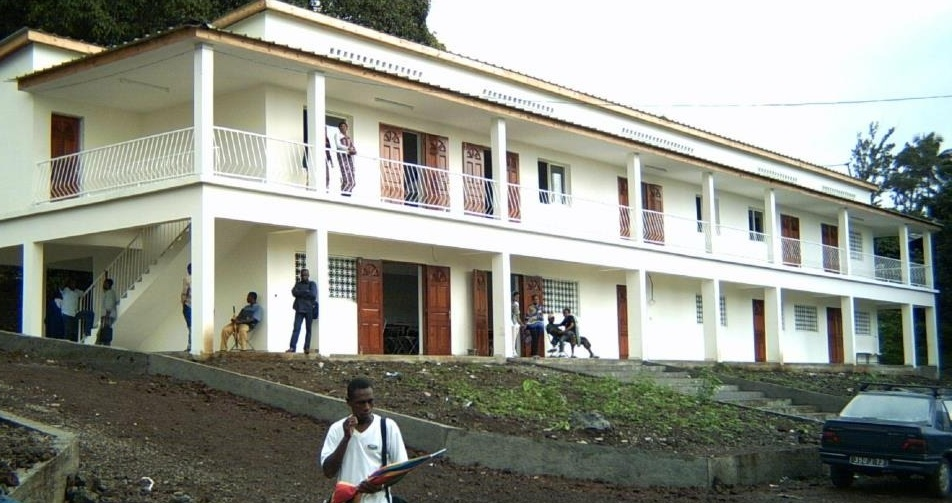
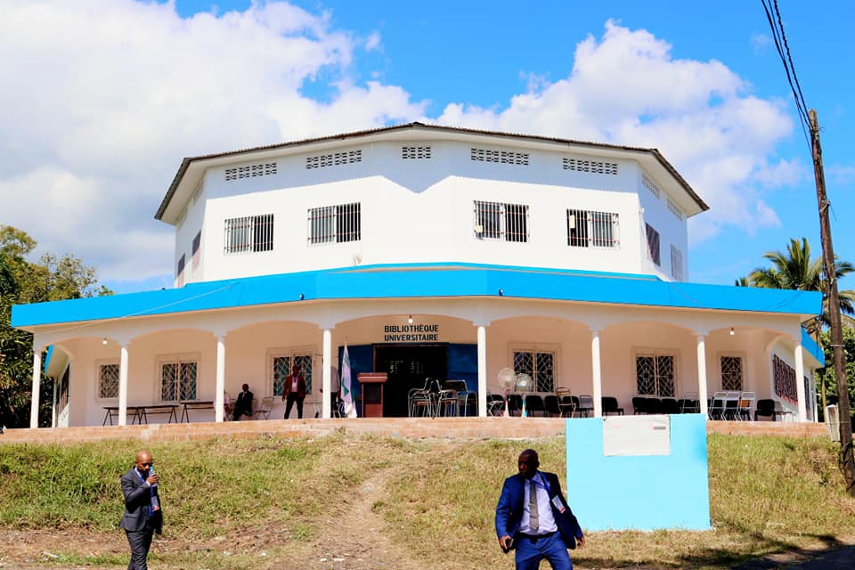
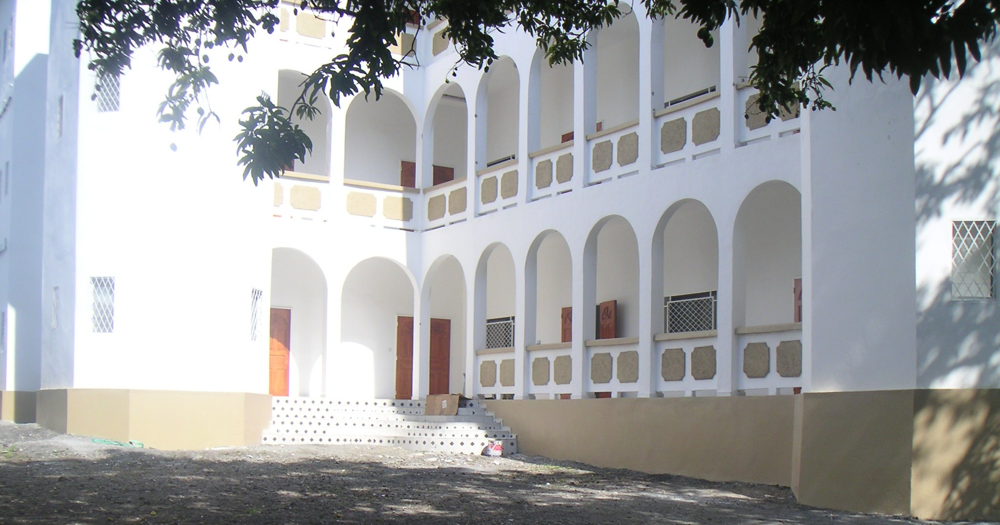

Licence 2 – Sciences Économiques
Université des Comores – FDSE · 2017–2018
Deuxième Année de Licence
L'objectif principal de la deuxième année en Sciences Économiques est d'approfondir la compréhension des théories économiques fondamentales tout en introduisant les outils méthodologiques indispensables à l'analyse économique.
Cette année permet aux étudiants de consolider leurs connaissances en microéconomie et macroéconomie, tout en découvrant des domaines complémentaires tels que la comptabilité, les statistiques appliquées et l'économie internationale. L'accent est mis sur le renforcement des capacités de réflexion critique et d'interprétation des données économiques.
En outre, la deuxième année vise à développer une approche interdisciplinaire, en intégrant des notions de gestion, de droit et de politiques économiques, afin de donner aux étudiants une vision plus globale des enjeux économiques.
Site Université des ComoresGalerie


